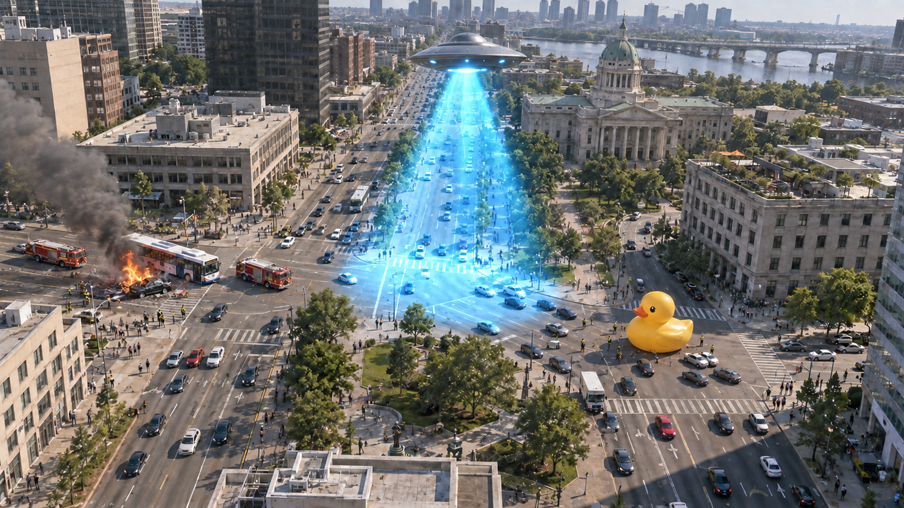

NEWSWORTHYMAKE THE NEWS.
LIVE CITY2 minutes · 10 photos

LIVE
DOWNTOWN / CHOPPER 01
TIME LEFT1:38
YOUR EARNINGS$1,250
+
8 SHOTS LEFT
BREAKING NEWS
BREAKING
NEWS
NEWS
UFO BRINGS DOWNTOWN
TO A STANDSTILL
EYEWITNESSES REPORT STRANGE LIGHTS ABOVE CITY
ORBISNEWSCHANNEL
ON THE WIRECITY OFFICIALS URGE RESIDENTS TO STAY INDOORS • GIANT DUCK BLOCKS TRAFFIC • MORE AS THIS STORY DEVELOPS